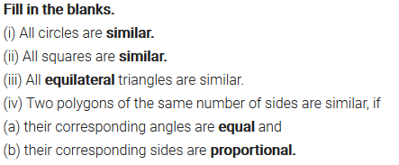
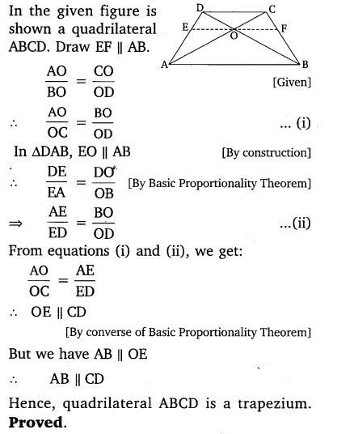
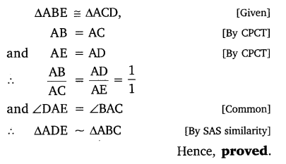
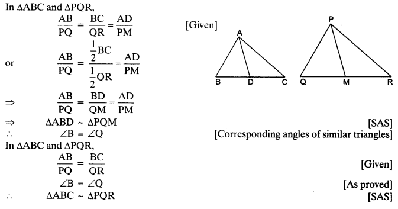
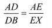

Get Free NCERT Solutions for Class 10 Maths Chapter 6 Ex 6.1 PDF. Triangles Class 10 Maths NCERT Solutions are extremely helpful while doing your homework. Exercise 6.1 Class 10 Maths NCERT Solutions were prepared by Experienced LearnCBSE.in Teachers. Detailed answers of all the questions in Chapter 6 Maths Class 10 Triangles Exercise 6.1 provided in NCERT TextBook.
You can also download Maths Class 10 to help you to revise complete syllabus and score more marks in your examinations.
Free download NCERT Solutions for Class 10 Maths Chapter 6 Exercise 6.1 Triangles PDF in Hindi Medium as well as in English Medium for CBSE, Uttarakhand, Bihar, MP Board, Gujarat Board, AP SSC, TS SSC and UP Board students, who are using NCERT Books based on updated CBSE Syllabus for the session 2019-20.
- Triangles Class 10 Mind Map
- Triangles Class 10 Ex 6.1
- Triangles Class 10 Ex 6.1 in Hindi Medium
- Triangles Class 10 Ex 6.2
- Triangles Class 10 Ex 6.2 in Hindi Medium
- Triangles Class 10 Ex 6.3
- Triangles Class 10 Ex 6.3 in Hindi Medium
- Triangles Class 10 Ex 6.4
- Triangles Class 10 Ex 6.4 in Hindi Medium
- Triangles Class 10 Ex 6.5
- Triangles Class 10 Ex 6.5 in Hindi Medium
- Triangles Class 10 Ex 6.6
- Triangles Class 10 Ex 6.6 in Hindi Medium
- Extra Questions for Class 10 Maths Triangles
- Triangles Class 10 Notes Maths Chapter 6
- NCERT Exemplar Class 10 Maths Chapter 6 Triangles
- Important Questions for Class 10 Maths Chapter 6 Triangles
NCERT Solutions For Class 10 Maths Chapter 6 Triangles Ex 6.1
NCERT Solutions for Class 10 Maths Chapter 6 Triangles Ex Ex 6.1 are part of Class 10 Maths NCERT Solutions. Here we have given NCERT Solutions for Class 10 Maths Chapter 6 Triangles Exercise 6.1
| Board | CBSE |
| Textbook | NCERT |
| Class | Class 10 |
| Subject | Maths |
| Chapter | Chapter 6 |
| Chapter Name | Triangles |
| Exercise | Ex 6.1 |
| Number of Questions Solved | 3 |
| Category | NCERT Solutions |
Ex 6.1 Class 10 Maths Question 1.
Fill in the blanks by using the correct word given in brackets.
(i) All circles are ……………. . (congruent/similar)
(ii) All squares are …………… . (similar/congruent)
(iii) All …………….. triangles are similar. (isosceles/equilateral)
(iv) Two polygons of the same number of sides are similar, if
(a) their corresponding angles are …………… and
(b) their corresponding sides are …………… (equal/proportional)
Solution:

Ex 6.1 Class 10 Maths Question 2.
Give two different examples of pairs of
(i) similar figures.
(ii) non-similar figures.
Solution:
Ex 6.1 Class 10 Maths Question 3.
State whether the following quadrilaterals are similar or not.
Solution:
Triangles Class 10 Ex 6.2
Ex 6.2 Class 10 Maths Question 1.
In the given figure (i) and (ii), DE || BC. Find EC in (i) and AD in (ii).
Solution:
Ex 6.2 Class 10 Maths Question 2.
E and F are points on the sides PQ and PR respectively of a ∆PQR. For each of the following cases, state whether EF || QR:
(i) PE = 3.9 cm, EQ = 3 cm, PF = 3.6 cm and FR = 2.4 cm
(ii) PE = 4 cm, QE = 4.5 cm, PF = 8 cm and RF = 9 cm
(iii) PQ = 1.28 cm, PR = 2.56 cm, PE = 0.18 cm and PF = 0.36 cm
Solution:
Ex 6.2 Class 10 Maths Question 3.
In the given figure, if LM || CB and LN || CD.
Prove that \(\frac { AM }{ AB } =\frac { AN }{ A{ D }^{ \bullet } } \)
Solution:
Ex 6.2 Class 10 Maths Question 4.
In the given figure, DE || AC and DF || AE.
Prove that \(\frac { BF }{ FE } =\frac { BE }{ E{ C }^{ \bullet } } \)
Solution:
Ex 6.2 Class 10 Maths Question 5.
In the given figure, DE || OQ and DF || OR. Show that EF || QR.
Solution:
Ex 6.2 Class 10 Maths Question 6.
In the given figure, A, B and C are points on OP, OQ and OR respectively such that AB || PQ and AC || PR. Show that BC || QR.
Solution:
Ex 6.2 Class 10 Maths Question 7.
Using B.P.T., prove that a line drawn through the mid-point of one side of a triangle parallel to another side bisects the third side. (Recall that your have proved it in class IX)
Solution:
Ex 6.2 Class 10 Maths Question 8.
Using converse of B.P.T., prove that the line joining the mid-points of any two sides of a triangle is parallel to the third side. (Recall that your have done it in class IX)
Solution:

Ex 6.2 Class 10 Maths Question 9.
ABCD is a trapezium in which AB || DC and its diagonals intersect each other at the point O. Show that \(\frac { AO }{ BO } =\frac { CO }{ D{ O }^{ \bullet } } \)
Solution:
Ex 6.2 Class 10 Maths Question 10.
The diagonals of a quadrilateral ABCD intersect each other at the point O such that \(\frac { AO }{ BO } =\frac { CO }{ D{ O }^{ \bullet } } \) Show that ABCD is a trapezium.
Solution:

Triangles Class 10 Ex 6.3
Ex 6.3 Class 10 Maths Question 1.
State which pairs of triangles in the given figures are similar. Write the similarity criterion used by you for answering the question and also write the pairs of similar triangles in the symbolic form :
Solution:
Ex 6.3 Class 10 Maths Question 2.
In the given figure, ∆ODC ~ ∆OBA, ∠BOC = 125° and ∠CDO = 70°. Find ∠DOC, ∠DCO and ∠OAB.
Solution:
Ex 6.3 Class 10 Maths Question 3.
Diagonals AC and BD of a trape∠ium ABCD with AB || DC intersect each other at the point O. Using a similarity criterion for two triangles, show that \(\frac { OA }{ OC } =\frac { OB }{ OD^{ \bullet } } \)
Solution:
Ex 6.3 Class 10 Maths Question 4.
In the given figure, \(\frac { QR }{ QS } =\frac { QT }{ PR } \) and ∠1 = ∠2. show that ∆PQR ~ ∆TQR.
Solution:
Ex 6.3 Class 10 Maths Question 5.
S and T are points on sides PR and QR of ∆PQR such that ∠P = ∠RTS. Show that ∆RPQ ~ ∆RTS.
Solution:
Ex 6.3 Class 10 Maths Question 6.
In the given figure, if ∆ABE ≅ ∆ACD, show that ∆ADE ~ ∆ABC.
Solution:

Ex 6.3 Class 10 Maths Question 7.
In the given figure, altitudes AD and CE of ∆ABC intersect each other at the point P. Show that:
(i) ∆AEP ~ ∆CDP
(ii) ∆ABD ~ ∆CBE
(iii) ∆AEP ~ ∆ADB
(iv) ∆PDC ~ ∆BEC
Solution:
Ex 6.3 Class 10 Maths Question 8.
E is a point on the side AD produced of a parallelogram ABCD and BE intersects CD at F. Show that ∆ABE ~ ∆CFB.
Solution:
Ex 6.3 Class 10 Maths Question 9.
In the given figure, ABC and AMP are two right triangles, right angled at B and M respectively. Prove that:
Solution:
Ex 6.3 Class 10 Maths Question 10.
CD and GH are respectively the bisectors of ∠ACB and ∠EGF such that D and H lie on sides AB and FE of ∆ABC and ∆EFG respectively. If ∆ABC ~ ∆FEG, show that
Solution:
Ex 6.3 Class 10 Maths Question 11.
In the given figure, E is a point on side CB produced of an isosceles triangle ABC with AB = AC. If AD ⊥ BC and EF ⊥ AC, prove that ∆ABD ~ ∆ECF.
Solution:
Ex 6.3 Class 10 Maths Question 12.
Sides AB and BC and median AD of a triangle ABC are respectively proportional to sides PQ and QR and median PM of ∆PQR (see in given figure). Show that ∆ABC ~ ∆bPQR.
Solution:

Ex 6.3 Class 10 Maths Question 13.
D is a point on the side BC of a triangle ABC, such that ∠ADC = ∠BAC. Show that CA² = CB.CD.
Solution:
Ex 6.3 Class 10 Maths Question 14.
Sides AB and AC and median AD of a triangle ABC are respectively proportional to sides PQ and PR and median PM of another triangle PQR. Show that ∆ABC ~ ∆PQR.
Solution:
Ex 6.3 Class 10 Maths Question 15.
A vertical pole of length 6 m casts a shadow 4 m long on the ground and at the same time a tower casts a shadow 28 m long. Find the height of the tower.
Solution:
Ex 6.3 Class 10 Maths Question 16.
If AD and PM are medians of triangles ABC and PQR respectively, where
∆ABC ~ ∆PQR. Prove that \(\frac { AB }{ PQ } =\frac { AD }{ P{ M }^{ \bullet } } \)
Solution:
Triangles Class 10 Ex 6.4
Ex 6.4 Class 10 Maths Question 1.
Let ∆ABC ~ ∆DEF and their areas be, respectively, 64 cm2 and 121 cm2. If EF = 15.4 cm, find BC.
Solution:
Ex 6.4 Class 10 Maths Question 2.
Diagonals of a trapezium ABCD with AB || DC intersect each other at the point O. If AB = 2 CD, find the ratio of the areas of triangles AOB and COD.
Solution:
Ex 6.4 Class 10 Maths Question 3.
In the given figure, ABC and DBC are two triangles on the same base BC. If AD intersects BC at O, show that: \(\frac { ar\left( ABC \right) }{ ar\left( DBC \right) } =\frac { AO }{ DO } \)
Solution:
Ex 6.4 Class 10 Maths Question 4.
If the areas of two similar triangles are equal, prove that they are congruent.
Solution:
Ex 6.4 Class 10 Maths Question 5.
D, E and F are respectively the mid-points of sides AB, BC and CA of ∆ABC. Find the ratio of the areas of ∆DEF and ∆ABC.
Solution:
Ex 6.4 Class 10 Maths Question 6.
Prove that the ratio of the areas of two similar triangles is equal to the square of the ratio of their corresponding medians.
Solution:
Ex 6.4 Class 10 Maths Question 7.
Prove that the area of an equilateral triangle described on one side of a square is equal to half the area of the equilateral triangle described on one of its diagonals.
Solution:
Ex 6.4 Class 10 Maths Question 8.
Tick the correct answer and justify
(i) ABC and BDE are two equilateral triangles such that D is the mid-point of BC. Ratio of the areas of triangles ABC and BDE is
(a) 2 :1
(b) 1:2
(c) 4 :1
(d) 1:4
(ii) Sides of two similar triangles are in the ratio 4 : 9. Areas of these triangles are in the ratio
(a) 2 : 3
(b) 4 : 9
(c) 81 : 16
(d) 16 : 81
Triangles Class 10 Ex 6.5
Ex 6.5 Class 10 Maths Question 1.
Sides of triangles are given below. Determine which of them are right triangles. In case of a right triangle, write the length of its hypotenuse.
(i) 7 cm, 24 cm, 25 cm
(ii) 3 cm, 8 cm, 6 cm
(iii) 50 cm, 80 cm, 100 cm
(iv) 13 cm, 12 cm, 5 cm
Solution:
Ex 6.5 Class 10 Maths Question 2.
PQR is a triangle right angled at P and M is a point on QR such that PM ⊥ QR. Show that PM2 = QM X MR.
Solution:
Ex 6.5 Class 10 Maths Question 3.
In the given figure, ABD is a triangle right angled at A and AC i. BD. Show that
(i) AB2 = BC.BD
(ii) AC2 = BC.DC
(iii) AD2 = BD.CD
Solution:
Ex 6.5 Class 10 Maths Question 4.
ABC is an isosceles triangle right angled at C. Prove that AB2 = 2AC2.
Solution:
Ex 6.5 Class 10 Maths Question 5.
ABC is an isosceles triangle with AC = BC. If AB2 = 2AC2 , Prove that ABC is a right triangle.
Solution:
Ex 6.5 Class 10 Maths Question 6.
ABC is an equilateral triangle of side la. Find each of its altitudes.
Solution:
Ex 6.5 Class 10 Maths Question 7.
Prove that the sum of the squares of the sides of a rhombus is equal to the sum of the squares of its diagonals.
Solution:
Ex 6.5 Class 10 Maths Question 8.
In the given figure, O is a point in the interior of a triangle ABC, OD ⊥ BC, OE ⊥ AC and OF ⊥ AB. Show that
(i) OA2 + OB2 + OC2 – OD2 – OE2 – OF2 = AF2 + BD2 + CE2
(ii) AF2 + BD2 + CE2 = AE2 + CD2 + BF2.

Solution:
Ex 6.5 Class 10 Maths Question 9.
A ladder 10 m long reaches a window 8 m above the ground. ind the distance of the foot of the ladder from base of the wall.
Solution:
Ex 6.5 Class 10 Maths Question 10.
A guy wire attached to a vertical pole of height 18 m is 24 m long and has a stake attached to the other end. How far from the base of the pole should the stake be driven so that the wire will be taut?
Solution:
Ex 6.5 Class 10 Maths Question 11.
An aeroplane leaves an airport and flies due north at a speed of 1000 km per hour. At the same time, another aeroplane leaves the same airport and flies due west at a speed of 1200 km per hour. How far apart will be the two planes after 1\(\frac { 1 }{ 2 }\) hours?
Solution:
Ex 6.5 Class 10 Maths Question 12.
Two poles of heights 6 m and 11m stand on a plane ground. If the distance between the feet of the poles is 12 m, find the distance between their tops.
Solution:
Ex 6.5 Class 10 Maths Question 13.
D and E are points on the sides CA and CB respectively of a triangle ABC right angled at C. Prove that AE2 + BD2 = AB2 + DE2.
Solution:
Ex 6.5 Class 10 Maths Question 14.
The perpendicular from A on side BC of a ∆ABC intersects BC at D such that DB = 3CD (see the figure). Prove that 2AB2 = 2AC2 + BC2.
Solution:
Ex 6.5 Class 10 Maths Question 15.
In an equilateral triangle ABC, D is a point on side BC, such that BD = \(\frac { 1 }{ 3 }\)BC. Prove that 9AD2 = 7AB2.
Solution:
Ex 6.5 Class 10 Maths Question 16.
In an equilateral triangle, prove that three times the square of one side is equal to four times the square of one of its altitudes.
Solution:
Ex 6.5 Class 10 Maths Question 17.
Tick the correct answer and justify : In ∆ABC, AB = 6\(\sqrt { 3 } \)cm, AC = 12 cm and BC = 6 cm. The angle B is:
(a) 120°
(b) 60°
(c) 90°
(d) 45
Solution:
Triangles Class 10 Ex 6.6
Ex 6.6 Class 10 Maths Question 1.
In the given figure, PS is the bisector of ∠QPR of ∆PQR. Prove that \(\frac { QS }{ SR } =\frac { PQ }{ PR } \)
Solution:
Ex 6.6 Class 10 Maths Question 2.
In the given figure, D is a point on hypotenuse AC of ∆ABC, DM ⊥ BC and DN ⊥ AB. Prove that:
(i) DM2 = DN X MC
(ii) DN2 = DM X AN
Solution:
Ex 6.6 Class 10 Maths Question 3.
In the given figure, ABc is triangle in which ∠ABC > 90° and AD ⊥ CB produced. Prove that AC2 = AB2 + BC2 + 2BC X BD
Solution:
Ex 6.6 Class 10 Maths Question 4.
In the given figure, ABC is atriangle in which ∠ABC 90° and AD ⊥ CB. Prove that AC2 = AB2 + BC2 – 2BC X BD
Solution:
Ex 6.6 Class 10 Maths Question 5.
In the given figure, Ad is a median of a triangle ABC and AM ⊥ BC. Prove that
Solution:
Ex 6.6 Class 10 Maths Question 6.
Prove that the sum of the squares of the diagonals of parallelogram is equal to the sum of the squares of its sides.
Solution:
Ex 6.6 Class 10 Maths Question 7.
In the given figure, two chords AB and CD intersect each other at the point P. Prove that:
(i) ∆APC ~∆DPB
(ii) AP X PB = CP X DP
Solution:
Ex 6.6 Class 10 Maths Question 8.
In the given figure, two chords Ab and CD of a circle intersect each other at the point P (when produced) outside the circle. Prove that:
(i) ∆PAC ~ ∆PDB
(ii)PA X PB = PC X PD
Solution:
Ex 6.6 Class 10 Maths Question 9.
In the given figure, D is a point on side BC of ∆ABC, such that \(\frac { BD }{ CD } =\frac { AB }{ A{ C }^{ \bullet } } \) Prove that AD is the bisector of ∆BAC.
Solution:
Ex 6.6 Class 10 Maths Question 10.
Nazima is fly fishing in a stream. The trip of her fishing rod is 1.8m above the surface of the water and the fly at the end of the string rests on the water 3.6m away and 2.4 m from a point directly under the trip of the rod. Assuming that her string (from the trip of the rod to the fly) is that, how much string does she have out (see the figure)? If she pills in the string at the rate of 5 cm per second, what will be the horizontal distance of the fly from her after 12 seconds?
Solution:
NCERT Solutions For Class 10 Maths Chapter 6 Triangles Ex 6.1 in Hindi Medium
प्र. 1. कोष्ठकों में दिए शब्दों में से सही शब्दों का प्रयोग करते हुए, रिक्त स्थानों को भरिए :
(i) सभी वृत्त …….. होते है| (सर्वांगसम, समरूप)
(ii) सभी वर्ग…… होते हैं| (समरूप, सर्वांगसम)
(iii) सभी …….. त्रिभुज समरूप होते है | (समद्विबाहु, समबाहु)
(iv) भुजाओं की समान संख्या वाले दो बहुभुज समरूप होते हैं, यदि
(i) उनके संगत कोण ……..हो तथा
(ii) उनकी संगत ……भुजाएँ हों| (बराबर, समानुपाती|
हलः
(i) सभी वृत्त समरूप होते हैं।
(ii) सभी वर्ग समरूप होते हैं।
(iii) सभी समबाहु त्रिभुज समरूप होते हैं।
(iv) भुजाओं की समान संख्या वाले दो बहुभुजे समरूप होते हैं, यदि
(i) उनके संगत कोण बराबर हों तथा
(ii) उनकी संगत समानुपाती भुजाएँ हों।
प्र० 2. निम्नलिखित युग्मों के दो भिन्न-भिन्न उदाहरण दीजिएः
(i) समरूप आकृतियाँ
(ii) ऐसी आकृतियाँ जो समरूप नहीं हैं।
हलः
(i) (a) दो वृत्त परस्पर समरूप होते हैं।
(b) दो वर्ग परस्पर समरूप होते हैं।
(ii) (a) एक वृत्त और एक त्रिभुज समरूप नहीं होते हैं।
(b) एक समद्विबाहु त्रिभुज और एक विषमबाहु। त्रिभुज समरूप आकृतियाँ नहीं होती हैं।
प्र० 3. बताइए कि निम्न चतुर्भुज समरूप हैं या नहीं:
हलः
संगत भुजाएँ समानुपाती हैं, परन्तु इनके संगत कोण समान नहीं हैं। ये आकृतियाँ समरूप नहीं हैं।
Class 10 Maths Triangles Mind Map
Similar Figures
Two figures having the same shape but not necessarily the same size are called similar figures
Two figures having the same shape as well as same size are called congruent figures
Note that all congruent figures are similar but the similar figures need not be congruent.
Similarity of Polygons
Two polygons of the same number of sides are similar if
(i) their corresponding angles are equal and
(ii) their corresponding sides are in the same ratio (or proportion)
Similarity of Triangles
Two triangles are similar if
(i) their corresponding angles are equal and
(ii) their corresponding sides are in the same ratio (or proportion)
Note : If the corresponding angles of two triangles are equal, then they are known as equiangular triangles.
The ratio of any two corresponding sides in two equiangular triangles is always the same.
Basic Proportionality Theorem (BPT) and its Converse
Basic Proportionality Theorem
If a line is drawn parallel to one side of a triangle to intersect the other two sides in distinct points, then other two sides are divided in the same ratio. Thus in ∆ABC, if DE || BC, then

Converse of BPT
If a line divides any two sides of a triangle in the same ratio, then the line is parallel to the third side,
Criteria For Similarity of Triangles
(i) AAA Similarity Criterion : If in two triangles, corresponding angles are equal then their corresponding sides are in the same ratio and hence the two triangles are similar.
(ii) AA Similarity Criterion : If in two triangles, two angles of one triangle are respectively equal to the two angles of the other triangle, then the two triangles are similar.
(iii) SSS Similarity Criterion : If in two triangles, corresponding sides are in the same ratio then their corresponding angles are equal and hence the triangles are similar.
(iv) SAS Similarity Criterion : If one angle of a triangle is equal to one angle of another triangle and the sides including these angles are in the same ratio (proportion), then the two triangles are similar.
Areas of Similar Triangles
The ratio of the area of two similar triangles is equal to the ratio of the squares for their corresponding sides thus if ∆ABC – ∆PQR, then
Pythagoras Theorem and its Converse
(i) If perpendicular is drawn from the vertex of the right angle of a right triangle to the hypotenuse then the triangles on both sides of the perpendicular are similar to the whole triangle and also to each other.
(ii) Pythagoras Theorem : In a right triangle, the square of the hypotenuse is equal to the sum of the squares of the other two sides. Thus in right ∆ABC right angled at B
AC2 = AB2 + BC2
(iii) Converse of Pythagoras Theorem : If in a triangle, square of one side is equal to the sum of the squares of the other two sides, then the angle opposite the first side is a right angle.
You can also download the free PDF of Class 10 Triangles NCERT Solutions or save the solution images and take the print out to keep it handy for your exam preparation.
Topics and Sub Topics in Class 10 Maths Chapter 6 Triangles:
| Section Name | Topic Name |
| 6 | Triangles |
| 6.1 | Introduction |
| 6.2 | Similar Figures |
| 6.3 | Similarity Of Triangles |
| 6.4 | Criteria For Similarity Of Triangles |
| 6.5 | Areas Of Similar Triangles |
| 6.6 | Pythagoras Theorem |
| 6.7 | Summary |
More Resources for CBSE Class 10
- NCERT Solutions
- NCERT Solutions for Class 10 Maths
- NCERT Solutions for Class 10 Science
- NCERT Solutions for Class 10 Social
- NCERT Solutions for Class 10 English
- NCERT Solutions for Class 10 Hindi
- NCERT Solutions for Class 10 Sanskrit
- NCERT Solutions for Class 10 Foundation of IT
- RD Sharma Class 10 Solutions
Formulae Handbook for Class 10 Maths and Science
NCERT Solutions for Class 10 Maths
- Chapter 1 Real Numbers
- Chapter 2 Polynomials
- Chapter 3 Pair of Linear Equations in Two Variables
- Chapter 4 Quadratic Equations
- Chapter 5 Arithmetic Progressions
- Chapter 6 Triangles
- Chapter 7 Coordinate Geometry
- Chapter 8 Introduction to Trigonometry
- Chapter 9 Some Applications of Trigonometry
- Chapter 10 Circles
- Chapter 11 Constructions
- Chapter 12 Areas Related to Circles
- Chapter 13 Surface Areas and Volumes
- Chapter 14 Statistics
- Chapter 15 Probability
We hope the NCERT Solutions for Class 10 Maths Chapter 6 Triangles Ex 6.1, help you. If you have any query regarding NCERT Solutions for Class 10 Maths Chapter 6 Triangles Exercise 6.1, drop a comment below and we will get back to you at the earliest.